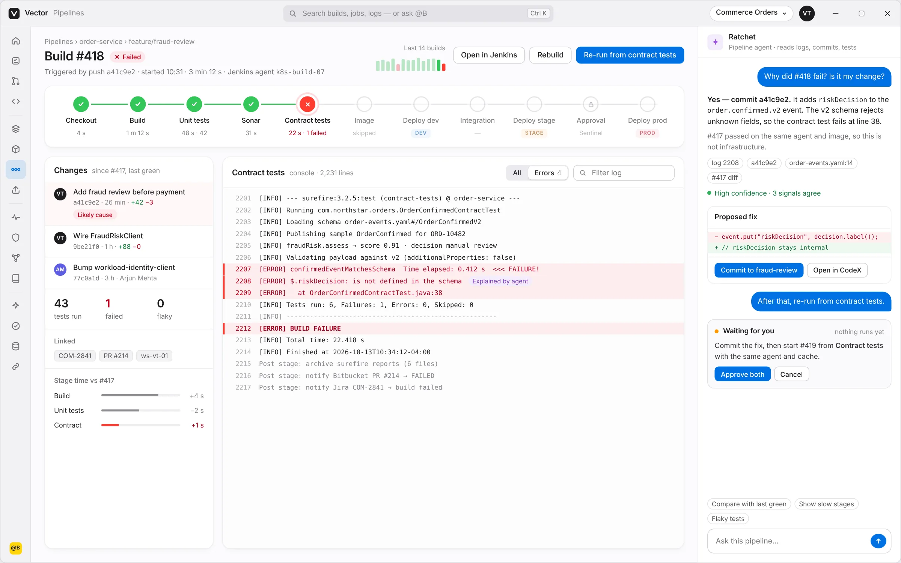
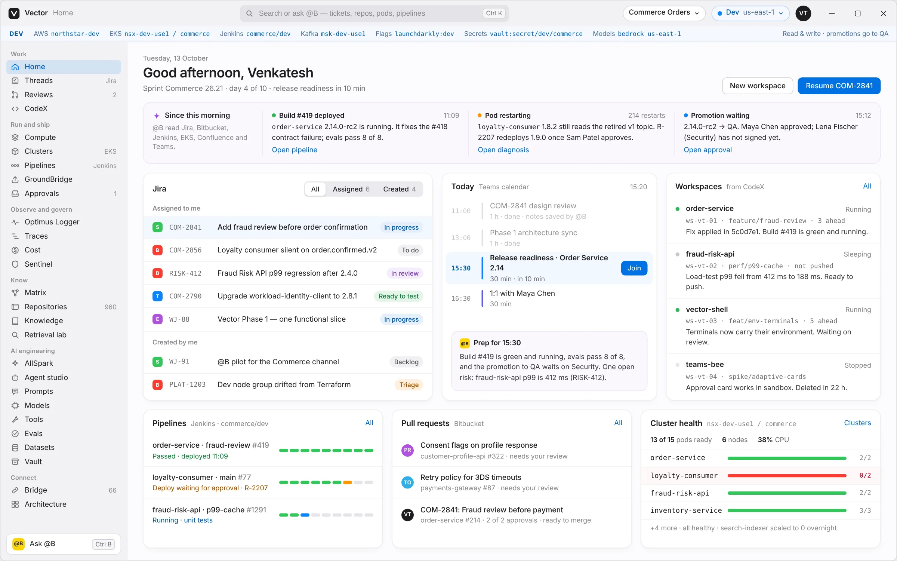
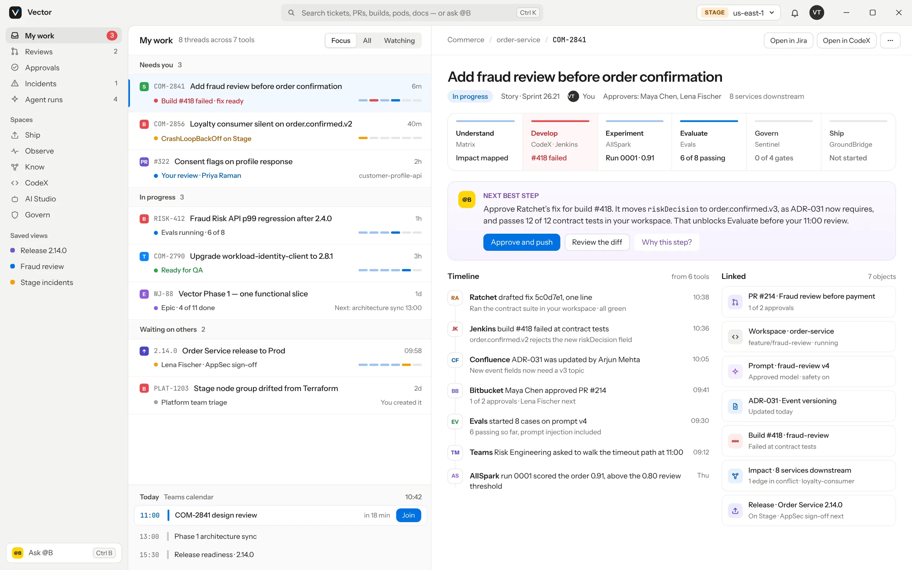
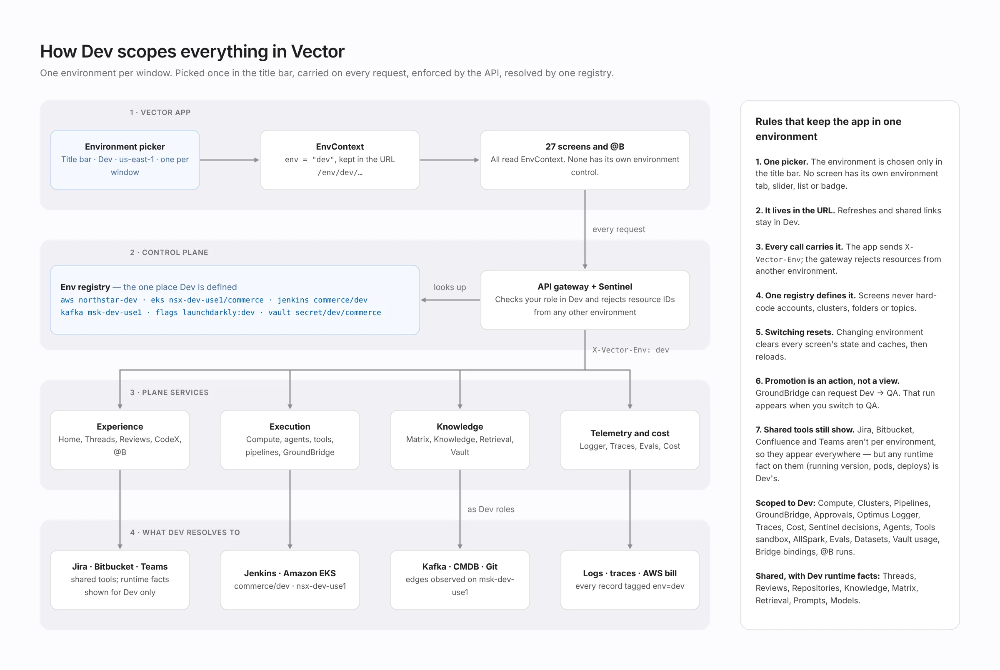

Cybertron, annotated
Vector, the engineering platform at the centre of Project Cybertron, taken apart one idea at a time. Each chapter explains how the design works, pins it on the real screens, lets you try it, and sets it beside how other tools do the same job.
Every lab runs locally on the design's own data or on the prototype's documented logic. Cost figures in the design are illustrative. Comparisons with other tools cite their public documentation.
From one question to a platform
Read in order for the whole argument, or jump to the part you need. Chapters 01 to 04 set up everything else.
The scattered answer
Six tools, five names for one service, and one answer with its evidence attached.
Names and the map
Cybertron, Vector, Atlas and @B, and every themed name beside its plain label.
Five planes
Experience, control, execution, knowledge, telemetry and cost, with Bridge around them.
One environment
One picker in the title bar scopes every screen, terminal, agent and @B run.
Matrix
Assertions with sources and two clocks. Conflicts stay visible until a person decides.
Answers with sources
Answers only from pages you can open, drifted docs flagged, and the context a model would see.
Code in Dev
CodeX workspaces bound to Dev, terminals that carry their environment, reviews with context.
Builds that explain themselves
Build #418, Ratchet's diagnosis, and the pod that kept restarting.
AllSpark
Versioned prompts, an approved model catalog, agents with a human step, and gated tools.
Evals
Eight cases bound to one fingerprint, and datasets that grow from Dev traces.
The sealed bundle
Four gates, one fingerprint, two signatures, and nothing rebuilt on promotion.
Sentinel
Seven policies, who can do what, and where every rule is checked.
Observe and cost
Optimus Logger, a six-span AI trace, and spend charged to a team.
@B
The Teams front door: your own permissions, the context shown, every write waits for a person.
The interface
The light Windows shell, all 30 boards, and six homepage directions.
The road
What is real today, the Phase 1 ask, four decisions and five measures.
Follow COM-2841 through the machine
The v3 design tells one story across every screen: hold high-risk orders for review before payment, without changing the event eight services consume. Each step links to the chapter that explains it.
A ticket in Jira
Maya Chen, the Commerce application owner, creates COM-2841 and links the Fraud Risk API guide in Confluence. The ask: score each order before payment, hold risky ones for review, and leave order.confirmed.v2 alone.
Matrix maps the blast radius
Two callers, eight dependents, and the new fraud call drawn dashed because it is only proposed. One edge conflicts: Git says loyalty-consumer reads the topic, Kafka hasn't seen it for 48 hours.
A workspace in Dev
Venkatesh opens CodeX workspace ws-vt-01 on feature/fraud-review. It runs beside nsx-dev-use1 and sees Dev's services, flags and secrets, because the window is set to Dev.
@B blocks one line
PR #214 opens in Bitbucket. @B's review flags that the change adds a field to an event whose schema forbids extra properties, read by eight consumers.
#418 fails, Ratchet explains
Jenkins build #418 fails at contract tests. Ratchet reads the log, the commit and the schema, names commit a41c9e2, and proposes keeping riskDecision internal. Venkatesh approves fix 5c0d7e1.
#419 passes, evals 8 of 8
Build #419 passes all nine stages. Evals runs eight cases on configuration cfg-7f3a9c and all pass. At 11:09 order-service 2.14.0-rc2 is running in Dev on two healthy pods.
One bundle, two signatures
GroundBridge seals the release and requests promotion to QA. Four gates pass on the same configuration. Maya Chen approves at 15:14; Lena Fischer of Application Security has not signed yet.
A question in Teams
Arjun asks @B why loyalty-consumer keeps restarting in Dev. @B answers with his permissions and shows its context: Dev pins an old version that reads a retired topic. The redeploy becomes run R-2207 and waits for Sam Patel.
The design trail
Nine stops from a naming chat to this guide. The two dark attempts were rejected; every later piece is light, and since v3 every screen sits in one environment.
Naming
The team's Transformers theme becomes a hierarchy: Project Cybertron for the initiative, Vector Sigma for the platform, and @B, "bee as in Bumblebee", for the Teams assistant. Optimus Logger and the team name Wheeljack already existed.
The Atlas handbook
Seventeen chapters and a reference that document the working React prototype: 22 views, a synthetic estate of 960 repositories, and the exact logic behind every gate, run and evaluation.
Seven concept films
About ten minutes of motion graphics on a dark cinema stage with light product windows, from "The Scattered Answer" to "The Road to Cybertron", with an interactive player and a release-gate lab.
Two dark attempts
A dark concept poster was rejected because it was not an actual Windows application. Realistic Windows windows on a dark theme were rejected next: the direction became light, clean and Apple-like, with no black backgrounds or unusual colours.
28 light screens
The first full screen set: every view from the handbook plus Jira, a Teams calendar, EKS, Bitbucket, Confluence, Jenkins with a pipeline agent, and @B. Some screens still let you choose environments per screen; the pipeline track ran from Dev through Stage to Prod.

v3: one shell, one environment
Every screen rebuilt on one identical shell and scoped to Dev, with QA appearing only as a promotion target. Two diagrams join them: the open environment picker and the environment flow. 30 boards in six rows.

Six homepage directions
Ask, Mission control, Threads, Glance, Flow and Map: six full-fidelity homepages that fuse work across tools, built to choose a direction before redesigning the rest of the suite. None is chosen yet.

Vector, annotated · the film
A narrated explainer of about four and a half minutes for the v3 concept, in eleven chapters: the environment model, COM-2841 from Jira to a gated promotion, @B, the five planes and the Phase 1 ask.
This field guide
Everything above, taken apart chapter by chapter in the format of the DeepInfer field guide.

Built from the Vector UI Concepts v3 and homepage-direction canvases, the Atlas handbook, and the project's notes and film scripts. Screens are rendered from the design files. Names follow the October 13 decisions: Vector, CodeX, Bridge, Compute and Evals.
Start with chapter 01 →